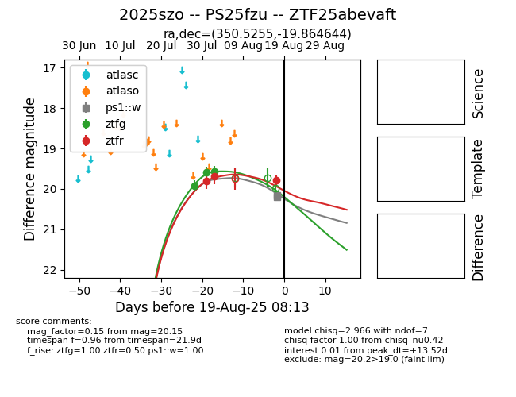

Target 2025szo at 2025-08-09 05:42, see:
FINK: fink-portal.org/2025szo
Lasair: lasair-ztf.lsst.ac.uk/objects/2025szo
ALeRCE: alerce.online/object/2025szo
TNS: wis-tns.org/object/2025szo
YSE: ziggy.ucolick.org/yse/transient_detail/2025szo
alt names
ZTF25abevaft (ztf,fink)
2025szo (tns,yse)
PS25fzu (panstarrs)
coordinates:
equatorial (ra, dec) = (350.5255,-19.86464)
galactic (l, b) = (47.7075,-68.30810)
photometry
last ztfg=19.57, ztfr=19.69
3 ztfg, 2 ztfr detections
